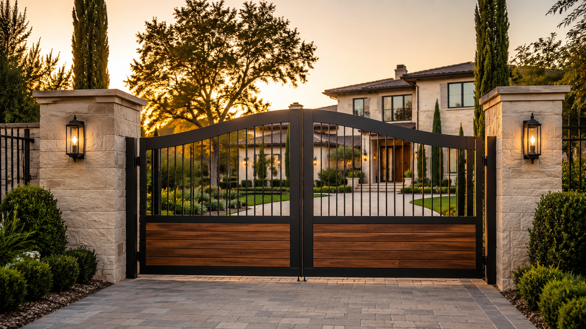

San Diego’s Knight at the Gate
Expert garage door and gate repair, installation, and maintenance from San Diego to Riverside County. Licensed, bonded, and insured — CSLB #1154002.
Castle is factory-authorized by these manufacturers and the only Home Depot installation partner across all of San Diego County.


From emergency repairs to brand-new installations, we handle it all — serving San Diego and Riverside County since 1981.

Repair, installation, and opener service for residential and commercial garage doors. Clopay Authorized Dealer with LiftMaster openers.
Explore Garage Door Services →
Automatic, driveway, security, and wrought iron gates. Installation, repair, and opener service — a specialty most competitors don’t offer.
Explore Gate Services →Springs, cables, rollers, panels, tracks, sensors. Same-day and 24/7 emergency service.
Schedule Repair →LiftMaster, Marantec, Genie. Smart/WiFi, belt drive, chain drive, wall-mount.
Explore Options →Most springs last about 10,000 cycles. Replace before they break — not after your car is stuck.
See If It’s Time →Residential, commercial, and custom installations. Steel, wood, carriage-house, and more.
Explore Doors →Automatic, driveway, and security gates. Installation, repair, and opener service.
Explore Gates →We’ve built our reputation one garage door at a time, serving San Diego and Riverside County since 1981.
Trusted garage door and gate service across San Diego and Riverside County since 1981.
When you call Castle, you reach a local team that cares about doing the job right — not a call center.
Castle is the exclusive Home Depot garage door service partner for San Diego County.
CSLB License #1154002. Fully insured, safety-focused, and trained for professional garage door and gate work.
Expert advice to keep your garage door safe, quiet, and reliable.
From the coast to the inland valleys, we’re your local garage door and gate specialists.
Looking for garage door repair near you in San Diego County? Castle serves homeowners across San Diego, Escondido, Carlsbad, Oceanside, Encinitas, Temecula, Murrieta, Corona, and nearby communities.
Free estimate, same-day service across San Diego County. No hidden fees — just honest, expert work.